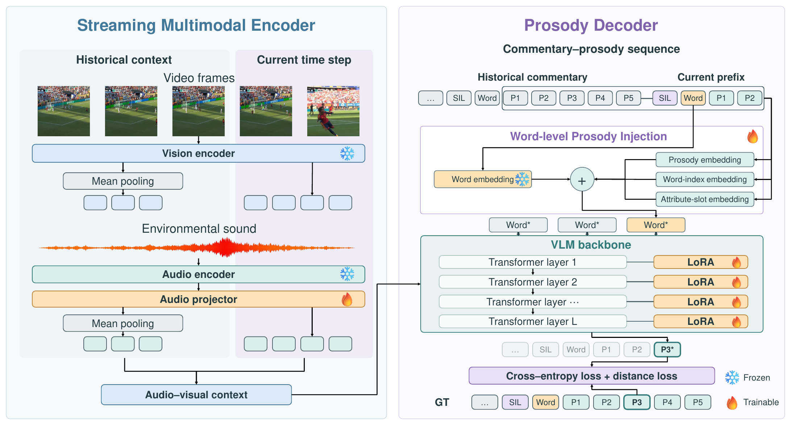
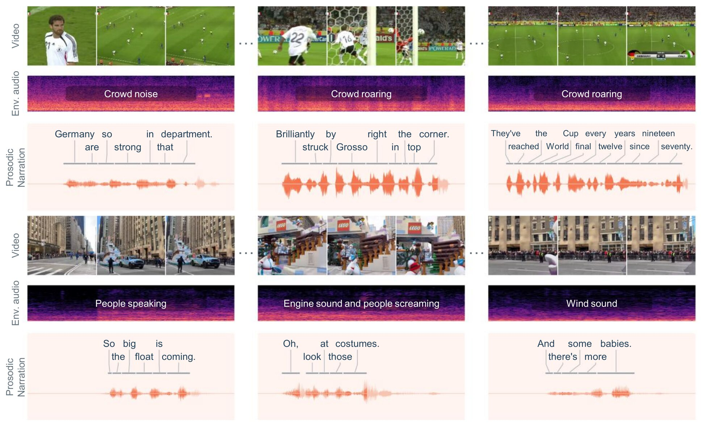
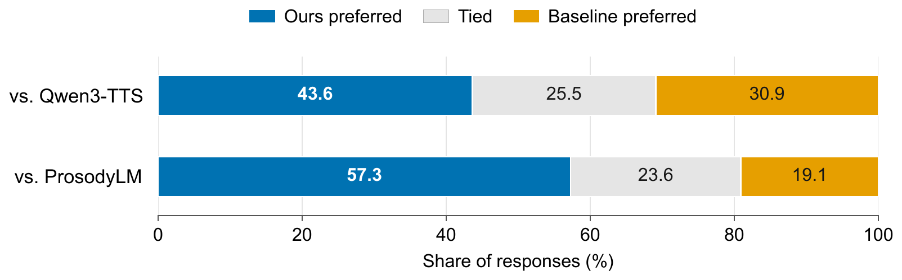

Every version speaks the same transcript over the same video and stadium audio. Only the narration differs. Switch versions while the video keeps playing, or click a transcript line to jump to it. Keys: Space play/pause · 1–9 track · ←→ clip
Compelling spoken narration needs the right words, and it needs prosody that reflects how much the unfolding events matter. Existing streaming video models focus on what to say. Text-conditioned speech models lack the perceptual context to decide how it should be said.
We introduce Prosodic Video Narration, a new task: continuously generating spoken descriptions whose content and prosody are grounded in streaming audio-visual events. To support it, we build a sports commentary dataset with aligned video, environmental audio, commentary text, and word-level prosodic annotations. We then propose ProsodyMLM, a streaming multimodal language model that predicts discrete word-level prosody from audio-visual context. Lightweight adapters and prosody injection keep autoregressive prosody prediction efficient. A two-stage training strategy first transfers expressive speech capabilities, then grounds them in multimodal events.
In quantitative metrics and a user study, ProsodyMLM's narration aligns better with reference speech and with the underlying events than existing baselines do. It improves pitch, speaking-rate, and emotional alignment while staying competitive on energy, with the largest gains during highly expressive moments.

A streaming multimodal encoder keeps fine-grained visual and environmental-audio tokens for the current segment and mean-pools each older segment into a single token, so the history stays compact. The vision encoder and the audio encoder are frozen. A trainable projector maps audio features into the language model.
The prosody decoder predicts, for every word, its preceding silence and five prosodic attributes (duration, pitch range, median, and slope, and energy) as discrete tokens. Word-level prosody injection adds a shared prosody embedding, a word-index embedding, and an attribute-slot embedding to the frozen word embedding. Prosody then rides on the existing word positions instead of being interleaved as extra tokens, which keeps the sequence about 7× shorter than in ProsodyLM. A prosody LoRA adapts the frozen VLM backbone to the new numerical output space.
Two-stage training. First, the model distills text–prosody knowledge from ProsodyLM pseudo-labels. Then it is fine-tuned on aligned multimodal commentary, with an extra pass on a balanced subset rich in exciting moments. The loss is cross-entropy plus a distance term that respects the ordering of prosody bins.

In soccer, routine passages get fairly neutral delivery, while salient moments with a roaring crowd draw out more expressive, energetic prosody (top). Applied zero-shot to parade videos, the model likewise raises its excitement when the crowd cheers (bottom). It picks up audio-visual event cues that carry over beyond sports.

Listeners saw the reference video and its ground-truth narration, then picked which of two outputs matched it better. ProsodyMLM was preferred over Qwen3-TTS 43.6% to 30.9% (25.5% ties) and over ProsodyLM 57.3% to 19.1% (23.6% ties).
ProsodyMLM builds on StreamingVLM for streaming video understanding and on ProsodyLM for discrete word-level prosody tokens, decoded to speech with StyleTTS2. We use SAM-Audio to separate commentary from environmental sound.